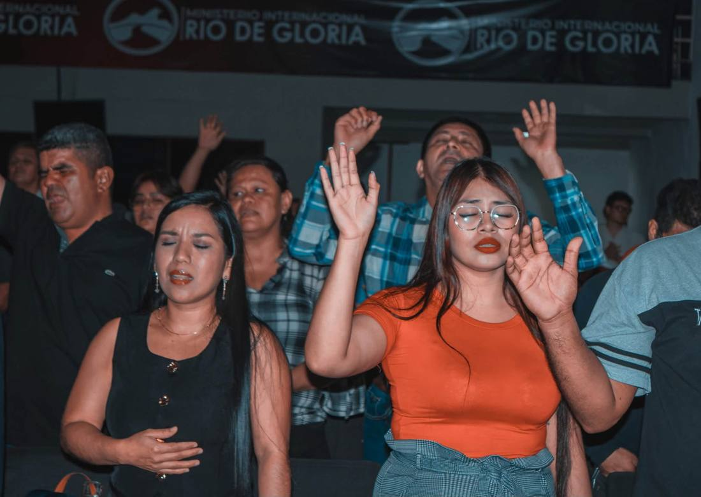
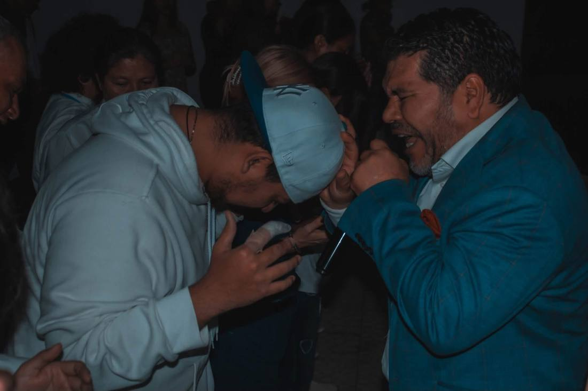
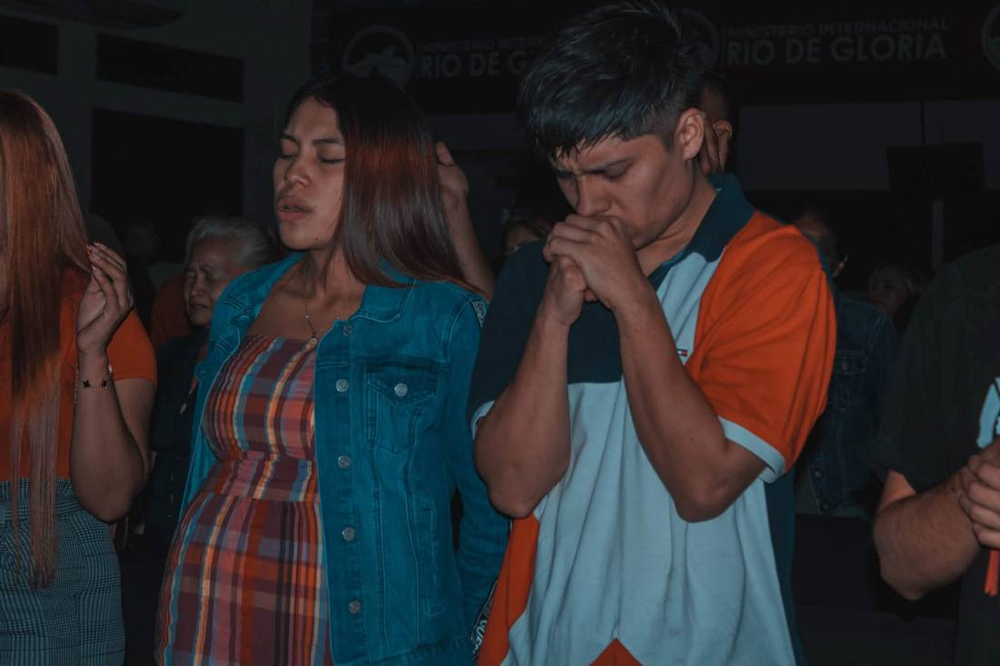
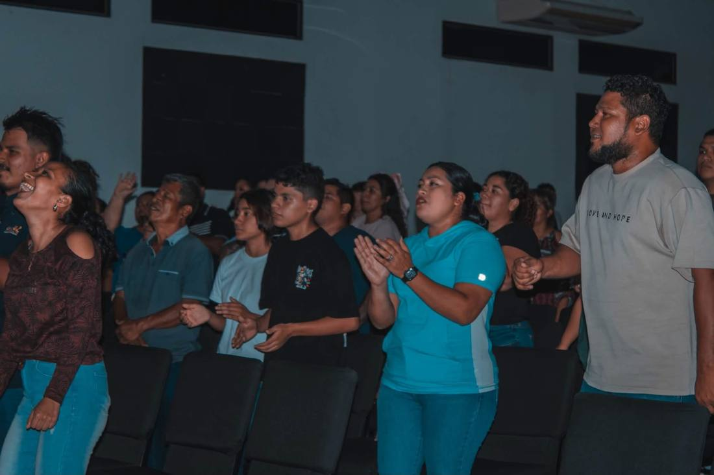
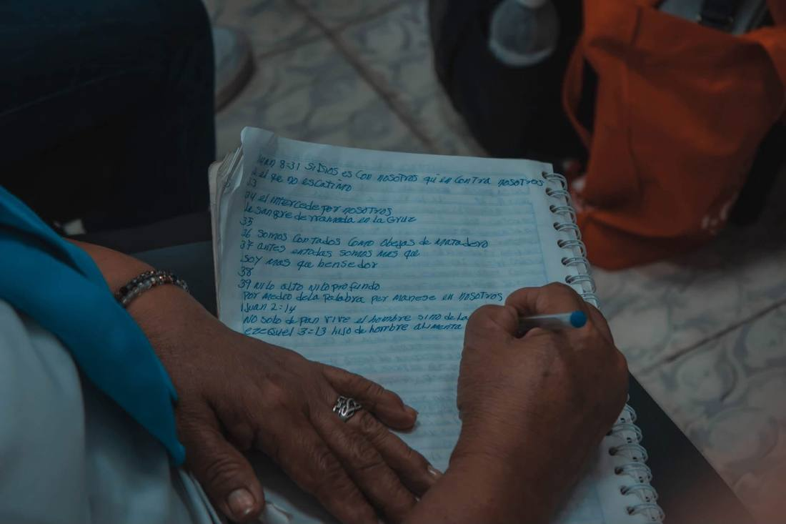
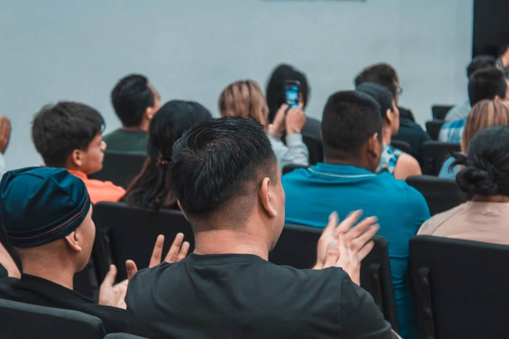

Qué vivirás
Así son nuestros jueves
Adoración
Cantamos juntos con las manos levantadas, en un ambiente de entrega y alegría.
La Palabra
Escuchamos un mensaje de la Biblia. Muchos traen su cuaderno para anotar lo que Dios les habla.
Oración y ministración
Oramos unos por otros y recibimos oración personal al final de la noche.
Galería
Noches de avivamiento






Te esperamos este jueves a las 6:30 PM
19 Calle Poniente, entre 1 y 3 Avenida Norte, #232. Barrio San Miguelito, San Salvador.